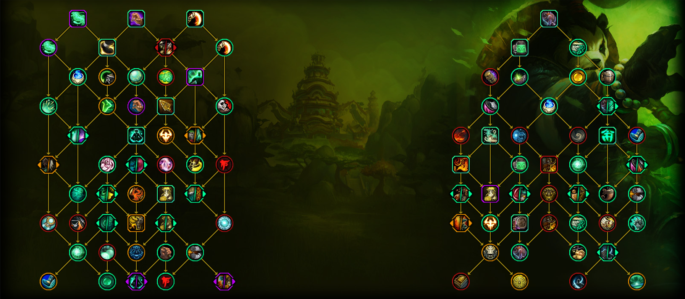
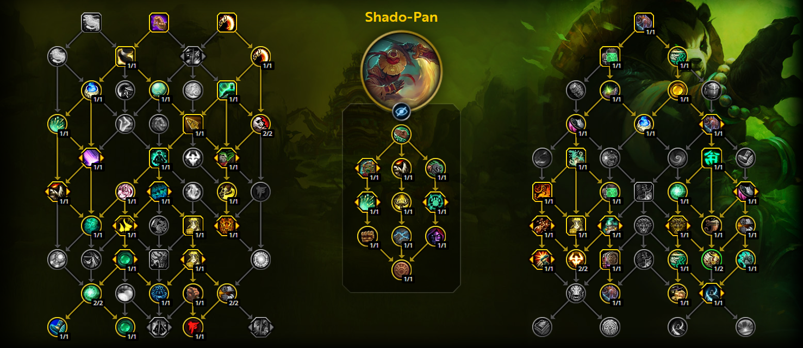

Talents
We have received a rework to our talent trees in The War Within, and we have multiple viable builds that can be run now. I will provide you with the builds that I will tend to run.
Talent Tree Overview
This talent tree shows a basic overview of the value for every talent. The talents are ranked as such: Green for required, purple for situational, orange for optional, and red for never.
Hero Trees
Currently, Shado-Pan outperforms Master of Harmony. If you like the playstyle of Master of Harmony, however, you can still run it. In this section, I will show which talents to run for each hero tree.

Class Tree
We will go into detail for each talent in the class tree, discussing what they do and when to take them.
Row 1


Soothing Mist
Never
This talent serves no purpose for us, as we will never actually have a chance to channel this in combat.
Row 2

Elusive Mists
Never
This talent gives us 6% damage reduction while channeling Soothing Mist, which is really bad considering we never channel Soothing Mist.
Row 3


Grace of the Crane
Required
This increases all healing we receive by 4%, making us much more survivable.
Row 4
Vivacious Vivification
Required
This talent makes our Vivify instant cast every 10 seconds. Because of Vivify being so strong this expansion, this provides us a way to spot heal not only ourselves, but also party members while in combat.
Row 5


Chi Wave / Chi Burst
Required
Chi Burst is a casted ability that does a ton of damage on both single target and AoE. We are able to dodge while casting this, so it is a great talent node.
Row 6


Quick Footed / Hasty Provocation
Optional
Quick Footed is essentially useless, but Hasty Provocation can be good in certain situations, as it makes Provoke increase how fast the target runs at us. It can be very nice when we need to taunt bosses on high movement fights.
Row 7


Profound Rebuttal
Required
This talent increases the critical healing of Expel Harm, which is very good, as it does a good amount of healing.
Row 8


Save them All
Never
Because our only way to heal allies is on a 10 second cooldown, this talen has a very low uptime, making it not a good choice.
Row 9

Chi Proficiency
Required
This talent increases magical damage and healing done by 4%. The healing is extremely helpful, and the magic damage increase is slightly helpful. This talent node is very important however, as we want it to branch to later talents.
Row 10

Lighter than Air
Optional
This talent gives you an additional dash that can be activated by pressing spacebar after rolling. If you like the talent or want a little bit extra mobility, you can take this talent.
Specialization Tree
We will go into detail for each talent in the class tree, discussing what they do and when to take them.
Row 1

Keg Smash
Required
This is your most important damaging ability. You want to use it off cooldown to generate AoE threat and reduce your brews' cooldowns. It is also one of your highest damaging abilities in AoE.
Row 2


Purifying Brew
Required
This ability clears 50% of your total stagger, reducing the amount of damage you take. Anytime you are below max health and have high stagger, you want to use this ability. It can also be used when low on stagger during bosses to buff your Celestial Brew.
Row 3


Staggering Strikes
Never
This talent causes our Blackout Kick to decrease our stagger by a small amount. Unfortunately, the stagger reduction is so small that we do not ever run this talent.
Row 4


Hit Scheme
Required
This talent is a massive damage increase. It makes our Blackout Kick increase the damage of our next Keg Smash by 10%, stacking up to 4 times.
Row 5


Celestial Flames
Never
This talent applies our Breath of Fire to all targets that are hit by our Spinning Crane Kick, aswell as giving us 5% increased damage reduction. This talent shouldn't be taken as we can already get high Breath of Fire uptime without it.
Row 6
Breath of Fire
Required
This ability does a decent amount of damage and makes all enemies that are hit deal 5% reduced damage to you.
Row 7


Scalding Brew / Sal'salabim's Strength
Required
Both Scalding Brew and Sal'salabim's Strength are very good talents. Due to Scalding Brew synergizing with our builds more, however, we currently take this talent in every build we play.
Row 8


Dragonfire Brew / Charred Passions
Required
Dragonfire Brew increases the damage of our Breath of Fire based on 100% of our stagger, making it a good damaging ability on AoE. Because of our current build not being surrounded around Breath of Fire, we want to take Charred Passions.
Row 9


Ox Stance
Never
Ox Stance is a great talent to take when you want to deal with heavy hitting tank busters. It increases the effectivess on your stagger when an attack hits you for greater than 60% of your maximum health. This gets little to no use in dungeons and should never be taken.
Row 10
Black Ox Adept
Never
This talent causes Rising Sun Kick to grant us a stack of Ox Stance. This talent is very underwhelming compared to others, so it should never be taken.
Talent Build
This is the talent build that I will be running. You can change around some of the talents to others depending on your needs.
